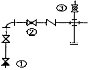
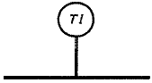
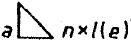
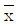
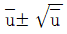
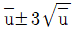
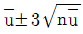
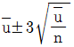

배관기능장 (2010-03-28 기출문제)
1과목: 임의구분
1. 옥내 소화전에 대한 내용으로 잘못된 것은?
- 방수압력은 노즐의 끝을 기준으로 1.7kg/cm2 이상 3kg/cm2 이하로 한다.
- 입상관의 내경은 50mm이상으로 한다.
- 소화전은 바닥면을 기준으로 1.5m 이내의 높이에 설치한다.
- 소화펌프 가까이에 게이트밸브와 체크밸브를 설치한다.
(정답률: 65%)

2. 가스용접 작업에 대한 안전사항으로 틀린 것은?
- 산소병은 40℃ 이하 온도에서 보관한다.
- 가스집중 장치는 화기를 사용하는 설비에서 5m 이상 떨어진 곳에 설치한다.
- 산소병은 충전 후 12시간 뒤에 사용한다.
- 아세틸렌 용기의 취급시 동결부분은 35℃ 이하의 온수로 녹여야 한다.
(정답률: 89%)
3. 가장 미세한 먼지를 집진할 수 있으므로 병원의 수술실 및 제약 공장 등에서 많이 사용하는 집진법은?
- 전기 집진법
- 원심 분리법
- 여과 집진법
- 중력 분리법
(정답률: 87%)
4. 오물 정화조의 구비조건이 아닌 것은?
- 정화조의 순서는 부패조, 예비 여과조, 산화조, 소독조의 구조로 한다.
- 정화조의 바닥, 벽, 천정, 칸막이 벽 등은 방수재료로 시공해야 한다.
- 부패조, 예비 여과조, 산화조에는 내경이 40cm 이상의 맨홀을 설치한다.
- 부패조는 침전 분리에 적합한 구조로 하고 오수를 담고 있는 깊이는 2m 이상으로 한다.
(정답률: 70%)
5. 가스배관에서 가스공급 시설중 하나인 정압기의 설명으로 맞는 것은?
- 제조공장과 공급지역이 비교적 가깝고 공급면적이 좁아 저압의 가스를 보낼 때 사용
- 제조 공장에서 생산, 정제된 가스를 저장하여 가스의 품질을 균일하게 하고 제조량 및 소요량을 조절하는 것
- 사용량이 서로 다른 시간별 또는 특정 시기에 소요 공급 압력을 일정하게 유지하는 역할
- 원거리 지역에 대량의 가스를 수송하기 위해 공압 압축기로 가스를 압축하는 역할
(정답률: 87%)
6. 수공구 사용에 대한 안전 유의사항 중 잘못된 것은?
- 사용 전에 모든 부분에 기름을 칠하고 사용할 것
- 결함이 있는 것은 절대로 사용하지 말 것
- 공구의 성능을 충분히 알고 사용할 것
- 사용 후에는 반드시 점검하고 고장난 부분은 즉시 수리의뢰할 것
(정답률: 95%)
7. 공조 시스템에서 차압 검출 스위치가 설치되는 곳은?
- 송풍기 출구의 덕트
- A. H. U의 증기코일 입구
- A. H. U의 냉각코일 입구
- 덕트 내부의 에어 필터
(정답률: 77%)
8. 자동제어의 피드백 제어계에서 조절부에 대하여 옳게 설명한 것은?
- 목표치를 기준입력신호로 조절해준다.
- 제어동작 신호를 받아 조작량을 조절한다.
- 동작신호에 따라 2위치, 비례 등 이에 대응하는 연산출력을 만드는 곳으로 조작신호를 출력한다.
- 조작량 만큼의 제어결과 즉 제어량을 발생한다.
(정답률: 58%)
9. 개별식 급탕법의 장점을 중앙식 급탕법과 비교 설명한 것으로 옳은 것은?
- 탕비장치가 크므로 열효율이 좋다.
- 대규모 급탕에는 경제적이다.
- 배관 중의 열손실이 적다.
- 열원으로 값싼 연료를 쓰기가 쉽다.
(정답률: 70%)
10. 배관공작용 공구에서 화상의 위험이 있는 것은?
- 봄볼
- 드레서
- 토치램프
- 맬릿
(정답률: 94%)
11. 시퀀스제어(sequence control)란 무엇인가?
- 결과가 원인이 되어 진행하는 제어로서 출력측의 신호를 입력측으로 되돌리는 제어이다.
- 미리 정해진 순서에 따라 제어의 각 단계를 순차적으로 진행하는 제어이다.
- 목표치가 다른 양과 일정한 비율관계에서 변화되는 제어이다.
- 전압이나 주파수 전동기의 회전수 등을 제어량으로 하고 이것을 일정하게 유지하는 것을 목적으로 하는 제어이다.
(정답률: 93%)
12. 자동화 시스템에서 공정처리 상태에 대한 정보를 받아서, 제한된 공간내에서 기계구조에 의해 일을 하는 부분으로, 인간의 손, 발의 기능을 하는 자동화의 5대 요소인 것은?
- 센서(sensor)
- 네트워크(network)
- 액추에이터(actuator)
- 소프트웨어(software)
(정답률: 79%)
13. 150A관의 내경은 155mm이다. 이 관을 이용하여 매초 1.5m의 속도로 물을 수송하고 있다. 2시간 동안 수송된 물의 양은 약 몇 m3 정도인가?
- 102
- 136
- 155
- 204
(정답률: 60%)
14. 암모니아 가스의 누설위치를 찾기 위해서는 무엇을 쓰는 것이 가장 좋은가?
- 비눗물
- 알콜
- 냉각수
- 페놀프타렌
(정답률: 87%)
15. 어느 방의 전난방부하가 1.16kW일 때 복사 난방을 하려면 DN15인 코일을 약 몇 m나 시설해야 하는가? (단, DN15인 코일의 m당 표면적은 0.047m2이고, 관 1m2당 방열량은 0.26kW/m2이라고 한다.)
- 85
- 95
- 100
- 110
(정답률: 65%)
16. 보일러의 과열로 인한 파열의 원인이 아닌 것은?
- 화염이 국부적으로 집중 연소될 경우
- 보일러수에 유지분이 함유되어 있는 경우
- 스케일 부착으로 열 전도율이 저하될 경우
- 물 순환이 양호하여 증기의 온도가 상승될 경우
(정답률: 88%)
17. 샌드 블라스트 세정법에 관한 설명 중 틀린 것은?
- 공기 압송장치가 필요하다.
- 모래를 분사하여 스케일을 제거한다.
- 100A 이상의 대구경관이나 탱크 등에 사용한다.
- 공기, 질소, 물 등의 압력과 화학 세정액을 병행 사용한다.
(정답률: 85%)
18. 배관 설비의 진공 시험에 관한 설명으로 틀린 것은?
- 기밀시험에서 누설 개소가 발견되지 않을 때 하는 시험이다.
- 주위 온도의 변화에 대한 영향이 없는 시험이다.
- 관 속을 진공으로 만든 후 일정 시간 후의 진공 강하 상태를 검사한다.
- 진공 펌프나 추기 회수 장치를 이용하여 시험한다.
(정답률: 89%)
19. 기송 배관의 부속설비 중 공기 수송기에서 분말이나 알갱이를 수송관 쪽으로 공급하는 장치는?
- 송급기
- 분리기
- 수송관
- 동력원
(정답률: 84%)
20. 가스가 누설될 경우 초기에 발견하여 증폭 및 폭발사고를 미연에 방지하기 위해 누설을 감지할 수 있도록 하는 설비는?
- 가스 저장설비
- 가스 공급설비
- 부취설비
- 부스터(booster)설비
(정답률: 81%)
2과목: 임의구분
21. 다음 피복 재료 중 무기질 보온 재료가 아닌 것은?
- 기포성 수지
- 석면
- 암면
- 규조토
(정답률: 82%)
22. 강관의 종류와 KS 규격기호를 짝지은 것으로 틀린 것은?
- 수도용 아연도금 강관-SPPW
- 고압 배관용 탄소강관-SPPH
- 압력 배관용 탄소강관-SPPS
- 고온 배관용 탄소강관-STHS
(정답률: 66%)
23. 액면 측정 장치가 아닌 것은?
- 전자유량계
- 초음파 액면계
- 방사선 액면계
- 압력식 액면계
(정답률: 63%)
24. 스위블형 이음쇠에 관한 설명으로 적합한 것은?
- 회전이음, 지웰이음 등으로도 불린다.
- 신축량이 큰 배관에서도 나사부가 헐거워지지 않는다.
- 설치비가 비싸 쉽게 조립해서 만들기 힘들다.
- 굴곡부에서 압력강하가 없다.
(정답률: 74%)
25. 양질의 선철에 강을 배합하여 원심력을 이용하여 주조한 후, 노속에서 730℃ 이상 고르게 가열하여 풀림처리한 주철관은?
- 수도용 원심력 사형주철관
- 수도용 원심력 금형주철관
- 수도용 원심력 덕타일 주철관
- 수도용 입형주철관
(정답률: 85%)
26. 제어방식에 따라 감압밸브 분류시 자력식 밸브는?
- 파일럿 작동식과 직동식 밸브
- 피스톤식과 다이어프램식 밸브
- 리프트식과 스윙식 밸브
- 불식과 해머리스식 밸브
(정답률: 63%)
27. 배관재료에 대한 설명 중 부적당한 것은?
- 연관 : 초산, 농염산 등에 내식성이 뛰어나다.
- 동관 : 콘크리트 속에서 잘 부식되지 않는다.
- 주철관 : 강관에 비해 내구성, 내식성이 풍부하다.
- 흉관 : 원심력 철근 콘크리트 관이다.
(정답률: 74%)
28. 증기의 공급 압력과 응축수의 압력차가 0.35kgf/cm2이상일 때 한하여 유닛 히터나 가열코일 등에 사용하는 특수트랩은?
- 박스 트랩
- 플러시 트랩
- 버킷 트랩
- 리프트 트랩
(정답률: 60%)
29. 450℃까지의 고온에 견디며 증기, 온수, 고온의 기름 배관에 가장 적합한 패킹은?
- 합성수지 패킹
- 금속 패킹
- 석면 개스킷
- 모울드 패킹
(정답률: 59%)
30. 열팽창에 의한 배관의 이동을 구속하거나 제한하기 위한 지지 장치는?
- 브레이스(brace)
- 파이프 슈(pipe shoe)
- 행거(hanger)
- 레스트레인트(restraint)
(정답률: 59%)
31. 내식, 내열 및 고온용 관으로서 특히 내식성을 필요로 하는 화학 공업 배관에 가장 적합한 강관은?
- 배관용 아크 용접 탄소강 강관
- 고압 배관용 탄소강 강관
- 배관용 스테인리스 강관
- 알루미늄 도금 강관
(정답률: 68%)
32. 경질염화비닐관과 연결이 가능하지 않는 이중관은?
- 동관
- 연관
- 강관
- 콘크리트관
(정답률: 86%)
33. 강관 이음재료를 설명한 것으로 맞는 것은?
- 나사조임형 강관제 이음재료에는 소켓, 니플, 30° 벤드 등이 있다.
- 고온, 고압에 사용되는 강제 용접이음쇠는 삽입 용접식만 사용된다.
- 플랜지 이음 중 플랜지면의 형상에 따라 가장 압력이 낮은 것은 전면 시이트이다.
- 유체의 성질은 플랜지 선택조건에 해당되지 않는다.
(정답률: 55%)
34. 내산성 및 내알칼리성이 우수하며 전기 절연성이 가장 큰 관은?
- 동관
- 연관
- 염화 비닐관
- 알루미늄관
(정답률: 60%)
35. 연관 접합에 대한 설명으로 틀린 것은?
- 연관을 접합할 때 와이어 플라스턴을 사용하나 턴핀은 사용하지 않는다.
- 플라스턴 이음의 종류에는 직선 이음, 맞대기 이음, 맨더린 이음 등이 있다.
- 플라스턴의 용융온도는 232℃이다.
- 플라스턴은 주석과 납의 합금이다.
(정답률: 70%)
36. 증기 난방에 사용되는 증기의 건조도가 0인 것은?
- 포화수
- 습포화증기
- 과열증기
- 포화증기
(정답률: 61%)
37. 동관의 플래어 접합(flare joint)에 대한 설명으로 틀린 것은?
- 관지름 20mm 이하의 동관을 이음할 때 사용한다.
- 동관을 필요한 길이로 절단할 때 관축에 대하여 약간 경사지게 한다.
- 진동 등으로 인한 풀림을 방지하기 위하여 더블너트로 체결한다.
- 플래어 이음용 공구에는 플래어링 툴 세트가 있다.
(정답률: 84%)
38. 15A에서 50A까지 나사를 낼 수 있는 오스터형 나사절삭기의 번호는?
- 102(112R)
- 104(114R)
- 1⑤(115R)
- 107(117R)
(정답률: 64%)
39. 스테인리스 강관 MR 조인트에 관한 설명으로 맞는 것은?
- 프레스 가공 등이 필요하고, 관의 강도를 100% 활용할 수 있다.
- 스패너 이외의 특수한 접속 공구가 필요하다.
- 청동제 이음쇠를 사용하여도 다른 강관과는 자연 전위차가 있어 부식의 문제가 있다.
- 화기를 사용하지 않기 때문에 기존 건물 등의 배관 공사에 적합하다.
(정답률: 80%)
40. 표준 대기압에서 50℃의 물 1kg을 100℃의 포화 수증기로 만드는데 필요한 열량은 약 몇 kJ인가? (단, 물의 비열은 4.19kJ/kgㆍK이고 물의 증발 잠열은 2256.7kJ/kg이다.)
- 2255.5
- 2466.2
- 2674.0
- 2883.2
(정답률: 45%)
3과목: 임의구분
41. 용접 잔류 응력을 경감하는 방법으로 틀린 것은?
- 용착금속의 양을 적게 한다.
- 적당한 용착법과 용접 순서를 선택한다.
- 용착금속의 양을 많게 한다.
- 예열을 한다.
(정답률: 80%)
42. 가스용접 토치에 관한 설명 중 틀린 것은?
- 저압식 토치에는 가변압식과 불변압식 토치가 있다.
- 불변압식 토치는 프랑스식이다.
- 독일식 토치는 팁의 머리에 인젝터와 혼합실이 있다.
- A형의 팁의 번호는 사용하는 연강판 모재의 두께를 표시한다.
(정답률: 73%)
43. 수 가공용 공구 중 줄의 종류를 눈금의 크기에 따라 분류한 것으로 잘못된 것은?
- 세목
- 중목
- 황목
- 초목
(정답률: 78%)
44. 일반적으로 수격작용이 발생하는 경우가 아닌 것은?
- 펌프를 가동하기 직전
- 송수과정에서 급수밸브를 급격히 폐쇄하는 경우
- 급수압력이 높은 심야시간에 급수관로를 열어 사용하다가 닫는 경우
- 펌프를 사용하여 양수하다가 펌프를 정지시키는 경우
(정답률: 83%)
45. 주철관의 소켓이음(socket joint)할 때 누수의 원인으로 가장 적당한 것은?
- 얀(yarn)의 양이 너무 많고 납이 적은 경우
- 코킹하기 전에 관에 붙어있는 납을 떼어낸 경우
- 코킹 세트를 순서대로 차례로 사용한 경우
- 코킹이 완전한 경우
(정답률: 85%)
46. MIG용접에서 200A 이상의 전류를 사용하였을 때 얻을 수 있는 용적이행은?
- 단락형 이행
- 스프레이 이행
- 글로뷸러 이행
- 핀치효과형 이행
(정답률: 58%)
47. 그림의 배관도에서 ①~③의 명칭이 올바르게 나열된 것은?

- ① 체크밸브, ② 글로브 밸브, ③ 콕 일반
- ① 체크밸브, ② 글로브 밸브, ③ 볼 밸브
- ① 앵글밸브, ② 슬루스 밸브, ③ 콕 일반
- ① 앵글밸브, ② 슬루스 밸브, ③ 볼 밸브
(정답률: 77%)
48. 그림과 같은 도시기호의 계기 명칭인 것은?

- 압력 지시계
- 온도 지시계
- 진동 지시계
- 소음 지시계
(정답률: 89%)
49. 이음쇠 끝부분의 접합부 형상을 나타내는 기호 중에서 수나사가 있는 접합부를 의미하는 기호는?
- M
- F
- C
- P
(정답률: 80%)
50. 그림과 같은 필릿 용접 기호에서 a는 무엇을 뜻하는가?

- 용접부 수
- 목 두께
- 목 길이
- 용접 길이
(정답률: 78%)
51. 도면에 사용되는 배관도시 약어가 잘못 연결된 것은?
- PC-압력 조절계
- TC-온도 조절계
- FI-유량 지시계
- FM-유속계
(정답률: 76%)
52. 판 두께를 고려한 원통 굽힘의 판뜨기 전개 시에 외경이 D0, 내경이 D1일 때, 두께가 t인 강판을 굽힐 경우 원통 중심선의 원주길이 L을 옳게 나타낸 것은?
- L=(D0-t)×π
- L=(D0+t)×π
- L=(D1-t)×π
- L=(D1×π)/t
(정답률: 70%)
53. 대상물의 보이지 않는 부분의 모양을 표시하는데 쓰이는 선은?
- 굵은 실선
- 가는 1점 쇄선
- 피선
- 가는 2점 쇄선
(정답률: 66%)
54. 관의 지름, 부속품, 흐름 방향 등을 명시하고 장치, 기기 등의 접속 계통을 간단하고 알기 쉽게 평면적으로 배치해 놓은 도면은?
- 계통도
- 장치도
- 평면배관도
- 입면배관도
(정답률: 67%)
55. 다음 중 통계량의 기호에 속하지 않는 것은?
- σ
- R
- s

(정답률: 61%)
56. 계수 규준형 샘플링 검사의 OC 곡선에서 좋은 로트를 합격시키는 확률을 뜻하는 것은? (단, α는 제 1종과오, β는 제2종과오이다.)
- α
- β
- 1-α
- 1-β
(정답률: 82%)
57. u 관리도의 관리한계선을 구하는 식으로 옳은 것은?




(정답률: 80%)
58. 다음 중 인위적 조절이 필요한 상황에 사용될 수 있는 워크팩터(Work Factor)의 기호가 아닌 것은?
- D
- K
- P
- S
(정답률: 69%)
59. 예방보전(Preventive Naintenance)의 효과로 보기에 가장 거리가 먼 것은?
- 기계의 수리비용이 감소한다.
- 생산시스템의 신뢰도가 향상된다.
- 고장으로 인한 중단시간이 감소한다.
- 예비기계를 보유해야 할 필요성이 증가한다.
(정답률: 86%)
60. 어떤 회사의 매출액이 80000원, 고정비가 15000원, 변동비가 40000원일 때 손익분기점 매출액은 얼마인가?
- 25000원
- 30000원
- 40000원
- 55000원
(정답률: 78%)